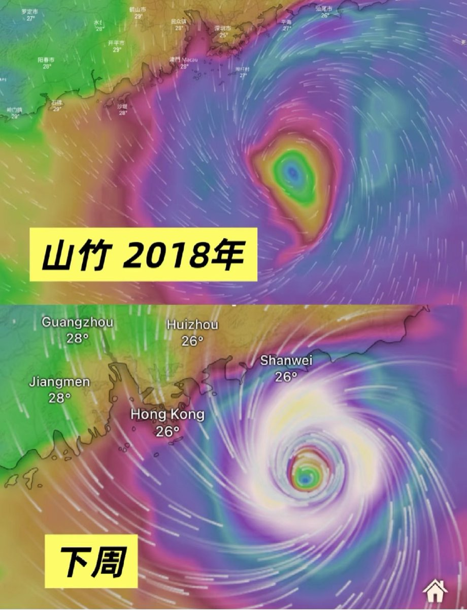

🍀🍥竹蜻蜓🍥🍀（七休日版）
@zqtlovekris99
这让我想起2018年的时候在珠海租房，脸接台风，我开学前几天过去的室友还没回来，但是厨房的糖罐洒了，养了将近一个暑假的大蟑螂窝，我自己不敢捣鼓他们，只能等台风刮完室友回来，刮台风还没法出去买蟑螂药啥的，只能和目测十多只大蟑螂共度三天夜晚，当时那个台风把整个小区的路灯和树都刮倒了，我在楼里感觉楼都在晃，虽然窗户都贴上了但还是觉得要被震碎了，还好我现在不在广东了，简直是心理阴影

Arden 🪶
@VVFGV
害怕，下周的台风居然会发光（（ https://t.co/cvVhsWejbD